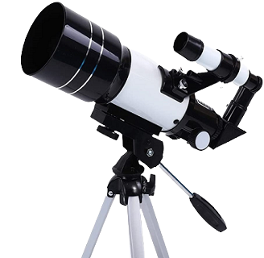
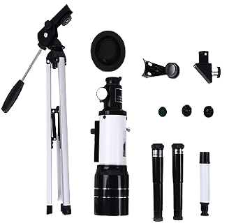
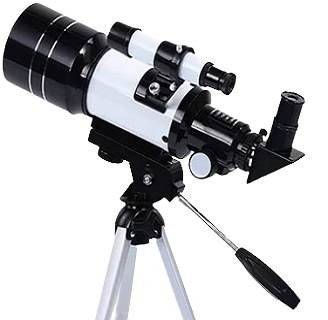

Telescópio
Telescópio refratário astronômico profissional claro para observação de estrelas, com tripé compacto e monóculo, perfeito para crianças, adolescentes e iniciantes.
Comprar Agora
Telescópio astronômico profissional
- Telescópios astronômicos podem ajudar seus filhos a despertar a curiosidade pela ciência e astronomia;
- Pode observar nebulosas, lua e marte, muito adequado para amadores e estudantes;
- Você também pode assistir a paisagem e práticar a observação de pássaros.
Informações Gerais
| Parâmetro do produto | Lista de embalagem | Telescópio atualizado |
|---|---|---|
| Sistema óptico: tipo de refração | Telescópio | Mais profissional, mais poderoso |
| Teleconversor: 1.5x | Suporte dobrável | 1. distância focal: 600mm |
| Diâmetro da lente objetiva: 50mm | Teleconversor 1.5x | 2. ampliação: 50-100 vezes |
| Ocular: h20mm/h6mm | Ocular s2 | 3. ocular: h6mm, h12mm |
| Abertura óptica: 50mm | Ocular h20 | 4. tripé: retrátil |
| Distância focal: 360mm | Filtro de lua | |
| Espelho de teto: 90 ° | Espelho de teto | |
| Relação focal: 7.2 | Parafuso de fixação | |
| Ampliação: 18x/60x | ||
| Tripé alumínio: liga |
Modelo
Pode ser usado como uma boa escolha para presentes, prático e jogável, para cultivar a capacidade de observação da criança.

Telescópio Astronômico - Material feito de liga de alumínio de boa qualidade, firme, longa vida útil, boa capacidade de carga.

Design removível - Armazenamento e instalação convenientes, economize espaço de armazenamento.

Projeto de suporte de triângulo - Estável e não tremendo, conveniente para observação.